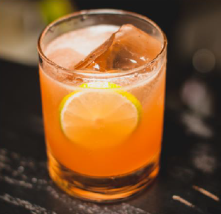

Le cocktail du dessert

C'est le cocktail parfait pour une grande soif sous une chaleur de plomb.
Il est composé de jus d'oranges, d'un fond de sirop grenadine et d'un peu de jus de citron. Un régal !
Ingrédients
Quantité: Pour un verre
- 20cl de jus d'oranges
- 2cl de sirop de grenadine
- 1cl de jus de citron
Recette
- Verser le sirop de grenadine dans le verre
- Verser le jus d'orange dans un verre
- Verser le jus de citron
- Mélanger le tout et déguster